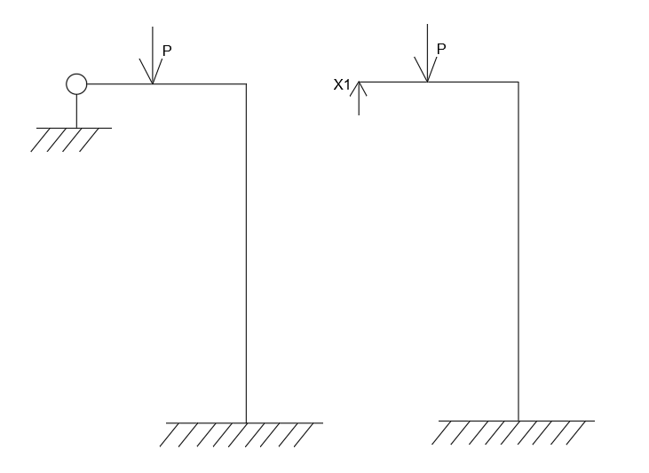
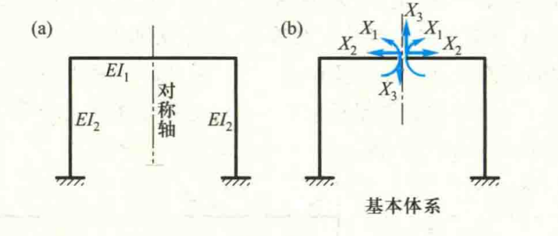
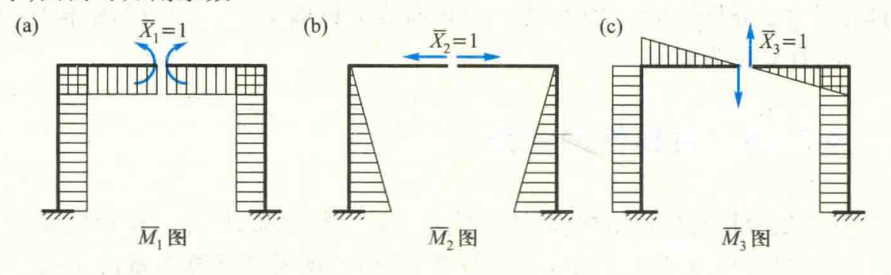
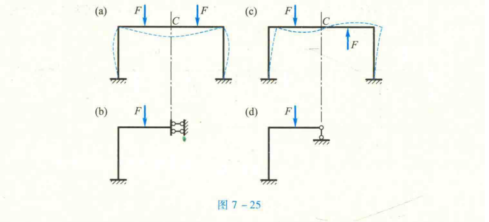
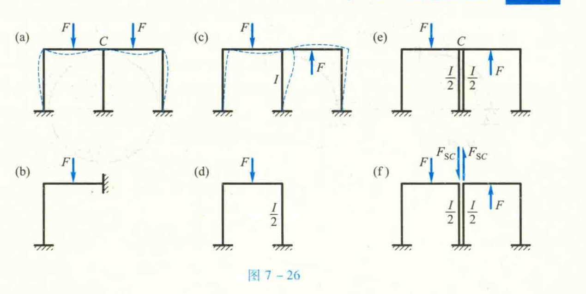

结构力学-力法
本文最后更新于：1 年前
概述
力学是结构力学中基于虚功原理，用于解算超静定结构的结构内力的一种计算方法。其基本原理为：通过将结构的多余支座假定为一系列的支座反力$\{ {X_1},{X_2},…,{X_n}\} $，将超静定问题转化为静定问题，然后使用图乘法求出当假设的支座反力为1时，引起的该力的方向上的位移，即得到结构在该方向上的柔度$\delta $，然后通过建立位移典型方程：各个力在假设的支座反力上引起的位移的总和为0，即$[X][\delta ] + [\Delta P] = 0$。求解该多元线性方程组即能得到假设的支座反力。根据支座反力和已知荷载可以求得结构内力。
该多元线性方程组也称为力法典型方程。
关于力法的典型方程，其中：
- $[X]$为假设的支座反力列向量，其等于${[{X_1},{X_2},...,{X_n}]^T}$；
- $[\delta ]$为各假设的支座反力当其大小等于单位力时，在对应的支座反力方向上引起的位移。其等于:
根据其表达式可以得出柔度矩阵$[\delta ]$为对称矩阵。
- $[\Delta P]$为外荷载所引起的对应位置的位移列向量，其等于：${\left[ {\int {\frac{{{M_p}{{\overline M }_{X1}}}}{{EI}},} \int {\frac{{{M_p}{{\overline M }_{X2}}}}{{EI}},...,\int {\frac{{{M_p}{{\overline M }_{Xn}}}}{{EI}}} } } \right]^T}$
- 其中$M_p$为所有的外荷载对于结构内力的组合效应。
原理
将超静定变为静定问题求解
超静定结构一般指的是自由度小于零的结构，一般该类结构都存在着多余约束。这些多余约束一般以力的形式作用在结构上，使得超静定结构的内力计算更加复杂。
为了求解这类超静定结构，我们通过将这些多余的约束看作其存在为力的形式，而且大小为：$\{ {X_1},{X_2},…,{X_n}\} $。这样结构就由超静定结构转化为了静定结构，其存在两类荷载，一是在转化之前就存在的外荷载${\rm{[P]}}$；另一类是转化之后用以替换多余约束的支座反力。
这样通过使用支座反力替换支座作用，即得到变换后的静定结构。
力法的典型方程
力法的典型方程是基于在所有作用下支座处产生支座反力的方向位移等于零为平衡条件所列出的典型方程。
在结构中，当我们假设某超静定结构存在支座反力$X_1$时，该支座反力作用于结构上的某个位置$M$。我们需要通过计算得到外荷载在该位置引起的虚位移。根据虚功原理，我们假设的支座反力所引起的位移会平衡外荷载所引起的位移，使得位置$M$实际的位移等于0，据此通过列出各力在各平衡位置所列出位移表达式，即可建立力法的典型方程。
根据这个上面所举例的简单例子，我们可以列出典型方程：
$$ \begin{array}{l} {S_{X1}} + \Delta P = 0\\ 其中{S_{X1}} = {X_1}{\delta _{11}};\\ \Delta P = P{\delta _{1P}} \end{array} $$- ${\delta _{11}}$为假定的单位支座反力在该方向上引起的位移；
- ${\delta _{1P}}$为外荷载综合作用在该支座反力方向上引起的位移
简单例子的示意图如下图所示：

图乘法<span class=”hint—top hint—rounded” aria-label=”结构力学-图乘法
“>[1]</span></a></sup>
计算荷载引起的结构位移可以采用图乘法，其基本原理和计算方法可以参考：结构力学-图乘法[1]
通过对外荷载与该位移方向的单位力图乘，即可得到外荷载在力的方向上引起的位移；
同理将位移方向的单位力与位移方向的单位力进行自乘或对应不同的支座位移的单位力进行图乘可以得到单位支座反力在对应的位移方向所产生的位移。
区别于位移法的刚度，单位力引起的位移称为柔度。
多支座反力的线性方程和求解
假设多余的约束有好多个，我们假定了一系列支座反力：$\{ {X_1},{X_2},...,{X_n}\} $。
我们要求出这些支座反力相互作用在对应的位移方向上的柔度：
$$ \left[ {\begin{array}{*{20}{c}} {{\delta _{11}}}&{{\delta _{12}}}&{...}&{{\delta _{1n}}}\\ {{\delta _{21}}}&{{\delta _{22}}}&{...}&{{\delta _{2n}}}\\ \vdots & \vdots & \ddots & \vdots \\ {{\delta _{n1}}}&{{\delta _{n2}}}&{...}&{{\delta _{nn}}} \end{array}} \right] $$根据图乘法可以得到：
显然该矩阵为对称矩阵，因此计算柔度时只需要计算一半的相对柔度。
计算外荷载产生的位移${[\Delta {P_1},\Delta {P_2},...,\Delta {P_n}]^T}$：
</div>
列典型方程：
该方程组为非齐次线性方程组，令支座反力向量$[X]={[{X_1},{X_2},...,{X_n}]^T}$，上面的柔度矩阵用$[\delta ]$表示，方程可表示为：$[X][\delta ] + [\Delta P] = 0$。
当柔度矩阵满秩时，方程有唯一的实数解，求解出支座反力向量，将其代入原结构中，即可根据支座反力和外荷载绘制结构内力图。
关于对称性利用的图文资料来自邱世勋，其中穿插了一些对称性的力法原理
基于力法的对称性求解的应用
对称性利用原则和条件
原则：使副系数，自由项尽可能为0。
条件：
- 结构几何对称
- 结构的刚度也互相对称
例子
正对称
正对称荷载作用下，内力和位移都正对称，反对称作用下，内力和位移都反对称。
举例下图所示的简单示例：


应用其对称性，立法的典型方程可以简化为：
$$ \begin{array}{l} {\delta _{13}} = {\delta _{31}} = 0,{\delta _{23}} = {\delta _{32}} = 0\\ \left\{ {\begin{array}{*{20}{c}} {{\delta _{11}}{X_1} + {\delta _{12}}{X_2} + {\Delta _{1P}} = 0}\\ {{\delta _{21}}{X_1} + {\delta _{22}}{X_2} + {\Delta _{2P}} = 0}\\ {{\delta _{33}}{X_3} + {\Delta _{3P}} = 0} \end{array}} \right. \end{array} $$反对称
对称结构在正对称结构下，内力位移都为正对称的，反对称结构下，内力位移都为反对称的。
- 奇数跨对称刚架：
奇数跨对称刚架。如图7 - 25a所示刚架，在正对称荷载作用下,由于只产生正对称的内力和位移，故可知在对称轴上的截面C处不可能发生转角和水平线位移,但可有竖向线位移同时,该截面上将有弯矩和轴力,而无剪力。因此,截取刚架的一半时，在该处应用一滑动支座(也称定向支座)来代替原有联系,从而得到图7-25b所示的计算简图。

- 偶数跨对称刚架
偶数跨对称刚架。如图7 - 26a所示刚架，在正对称荷载作用下,若忽略杆件的轴向变形,则在对称轴上的刚结点C处将不可能产生任何位移。同时,在该处的横梁杆端有弯矩、轴力和剪力存在。因此，截取一半时该处用固定支座代替,从而得到图7 - 26b所示的计算简图。
在反对称荷载作用下(图7 - 26c),可将其中间柱设想为由两根刚度各为I/2的竖柱组成,它们在顶端分别与横梁刚结(图7-26e),显然这与原结构是等效的。然后,设想将此两柱中间的横梁切开,则由于荷载是反对称的，故切口上只有剪力Fsc(图7-26f)。因忽略轴向变形,这对剪力将只使两柱分别产生等值反号的轴力,而不使其他杆件产生内力。而原结构中间柱的内力是等于该两柱内力之代数和,故剪力Fsc实际上对原结构的内力和变形均无影响。因此,可将其去掉不计，而取一半刚架的计算简图如图7-26d所示。

参考资料
Author： 吃白饭-EatRice
Source：
https://eatrice.top/post/结构力学-力法/
本博客所有文章除特别声明外，均采用 CC BY-SA 4.0 协议 ，转载请注明出处！